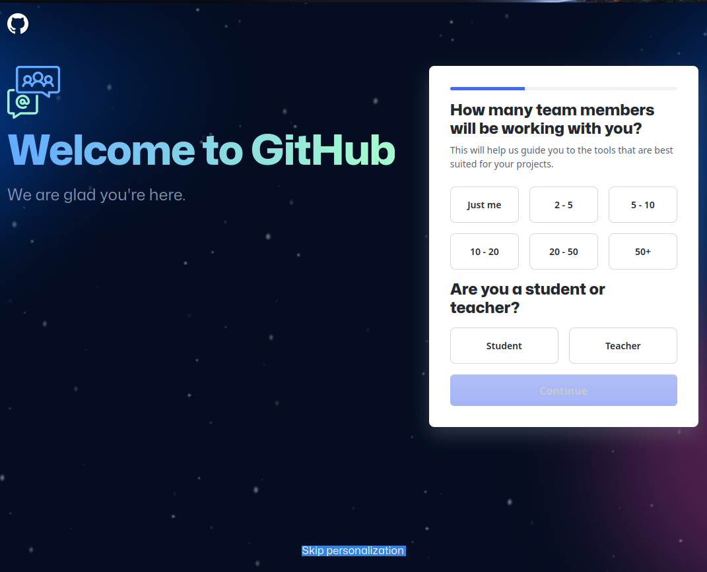
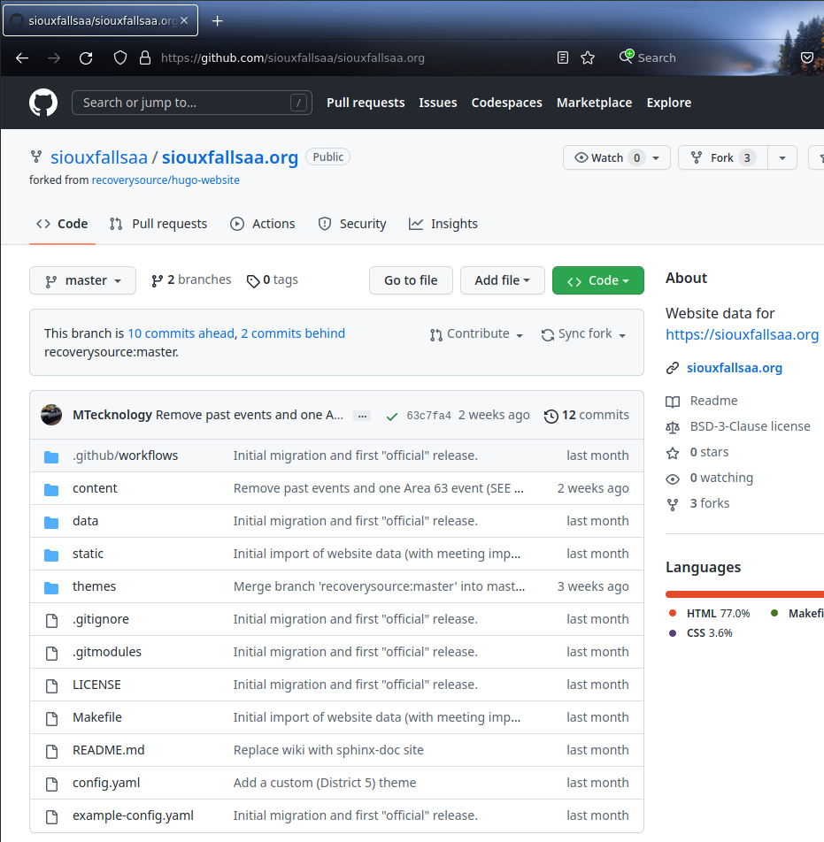
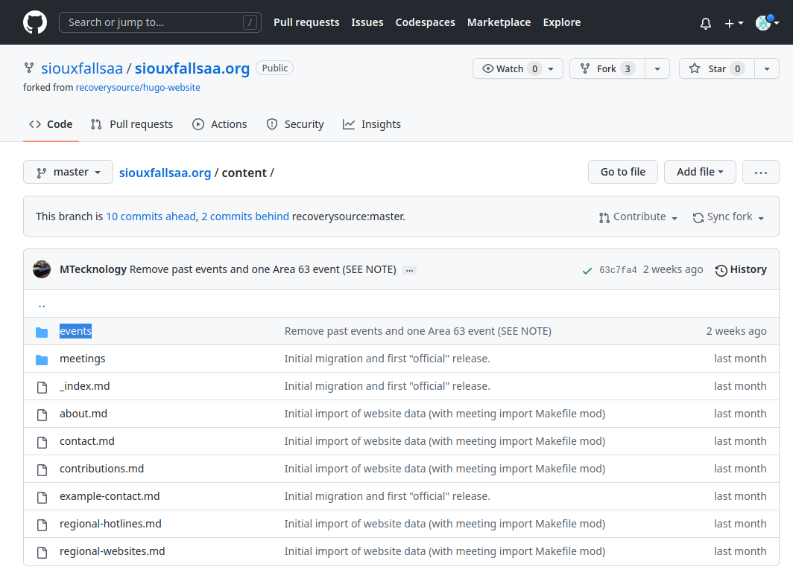
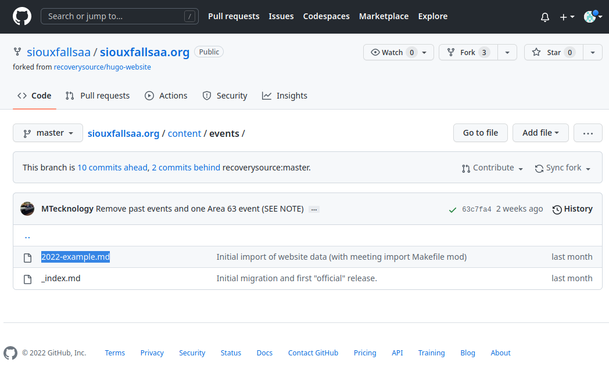
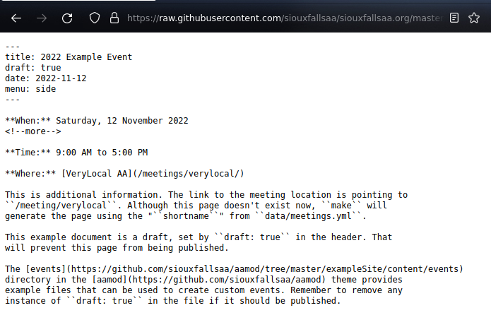
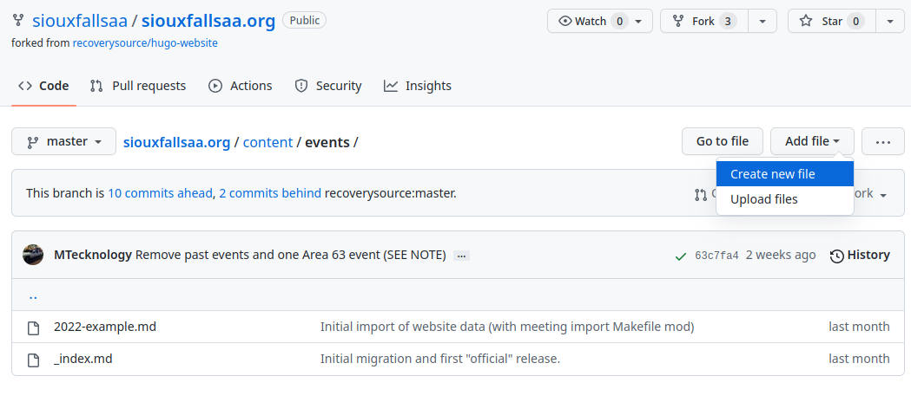
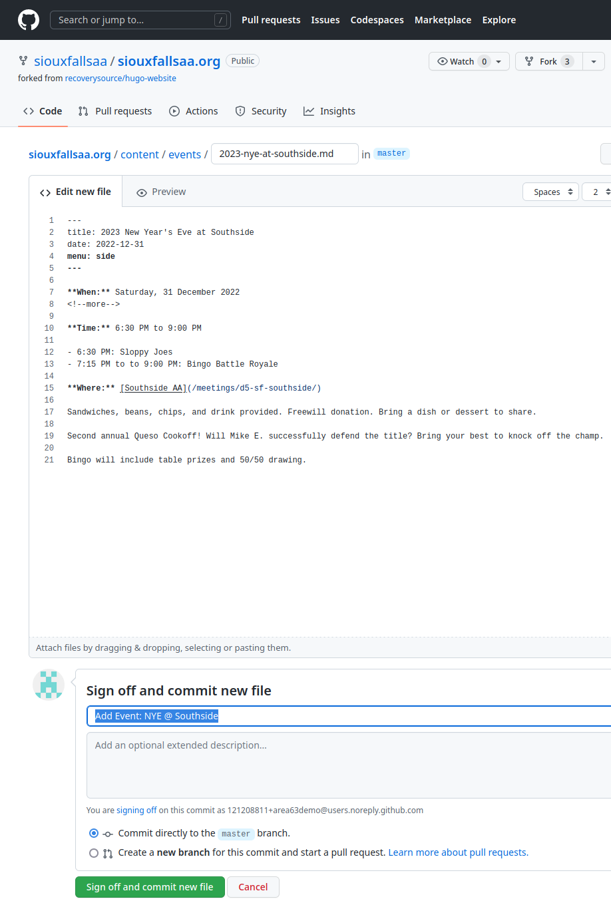

Update Website
This document explains how a user can log in and create a new event or update a meeting time. This is intended for users who have never worked with Github and assumes a New Website has already been created.
Register an Account
In order to be granted access to make any changes, you must create an account.
Open https://github.com and click
Sign up:
Provide basic account information:

Check email and provide the temporary token:

Either provide demographic information or click
Skip personalization:
At this point, your account has been created and is ready for use.
You can now contact anyone in charge of the website you would like to help with and provide your account name with a request for access.
Pull Requests
If you have not been provided access to a project and attempt to make changes on a website, Github will automatically create a Fork. This simply means your account now owns a copy of the project, which means you are free to make any changes to your copy.
After making changes to this copy, you can create a Pull Request, which just means you would like the main project to “absorb” your changes. Github provides a web interface for this which is documented on their website.
Responsibility
After a project (website) administrator has given you access to Team, you
will likely be able to make changes directly to the website repository. Although
access can be easily revoked and backups are automatic, most websites will
automatically “build and deploy.” This means care should be taken in order to
avoid phrases such as, “oh, I thought that was funny but I didn’t mean to
actually save it like thit.”
To accept this responsibility …
Open https://github.com, select your user icon, and select
Your Organizations:
Select
Joinnext to the organization/team you have been invited to:
Read through the disclaimer and choose the appropriate option.
Create an Event
To create an event:
Navigate to your project:

Select
content, thenevents:
The easiest way to proceed is to copy/paste an existing or example document:

Select the chosen source document and click the
Display the source blobbutton:
Highlight the document and “copy”. If this is challenging, the
Rawbutton will provide a “plain text” version that is easier to use.
Back in the
eventsdirectory, chooseAdd file > Create new file:
Paste the starting file contents into the large box and provide a filename above.
Note
This filename should NOT include spaces, keep it simple with numbers,
lowercase letters, hyphens, and underscores. The filename MUST end with
.md.
Update the content as appropriate and provide a short explanation of the change that is being made:

After clicking the
commitbutton, you can clickActionsto observe the website update “build” process:
Once complete, green checkmarks will be displayed:

Your changes will now be available for the world to view:

Update a Meeting
The process to update meetings is very similar to the process required to
Create an Event. Meeting information is stored in the data folder, which
can either have a single meetings.yaml file, or a directory named
meetings/ with any number of ____.yaml files within, each one
representing a meeting.
Geo Coords: Although the longitude and latitude fields are not
required, adding them significantly increases the build time and accuracy of
your website. If you locate the correct address in Google Maps, you can “right
click” the “red pin” and then click the coordinates provided to “copy” them into
your clipboard.
Address: When presented with a poorly-formatted or incomplete address without geo coordinates provided, a best-effort guess will be made as to what the correct address is. More accurate addresses will produce more accurate results.
Spaces: These yaml files are a special format that functions very similar to a serverless database. Spaces (NOT TABS) and colons are very important.